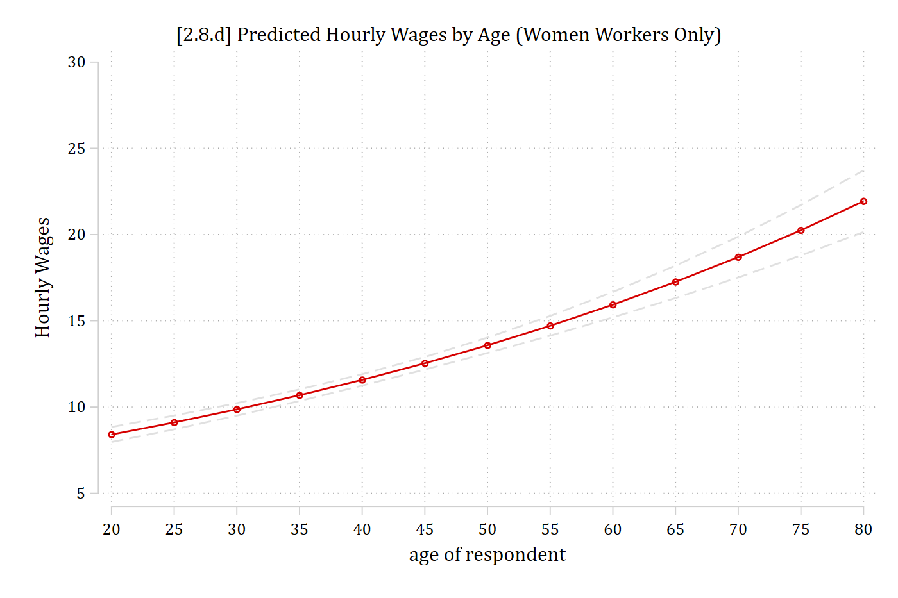
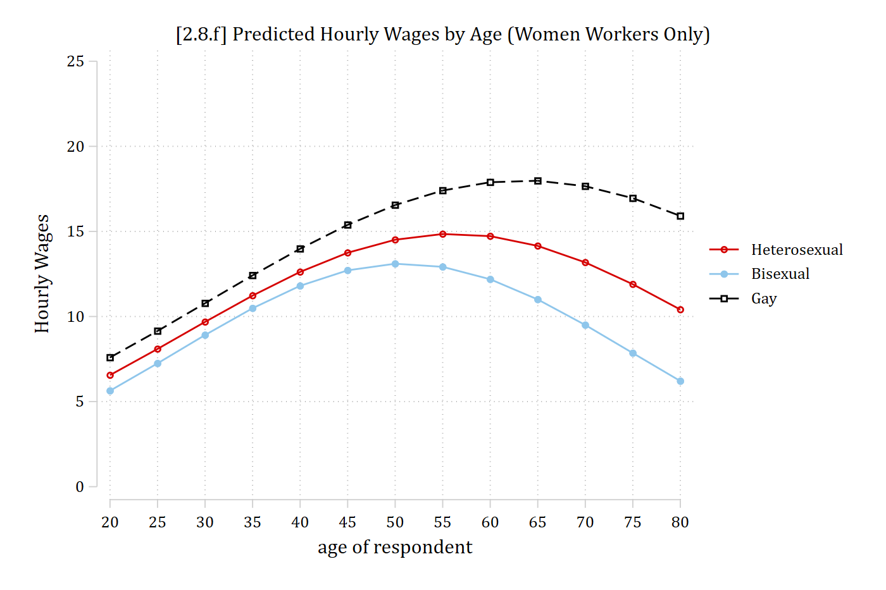

A2.9 Loglinear regression models
* Model from Table 2 of Mize (2016) ASR
usetdm smi_gss, clearLoading dataset...
(SMI | Mize 2016 ASR | GSS Data on Sexual Behavior and Wages)svy: reg logwages i.partners75 age i.educcat i.race year ///
numchild married i.region4 i.metro parttime i.isco88cat ///
if male==0, eform(Factor)(running regress on estimation sample)
Survey: Linear regression
Number of strata = 1 Number of obs = 6,550
Number of PSUs = 336 Population size = 6,567.8471
Design df = 335
F(26, 310) = 67.90
Prob > F = 0.0000
R-squared = 0.2560
-------------------------------------------------------------------------------
| Linearized
logwages | Factor std. err. t P>|t| [95% conf. interval]
--------------+----------------------------------------------------------------
partners75 |
Bisexual | 0.931 0.040 -1.658 0.098 0.855 1.013
Gay | 1.153 0.062 2.652 0.008 1.037 1.282
|
age | 1.016 0.001 15.741 0.000 1.014 1.018
|
educcat |
high school | 1.389 0.070 6.502 0.000 1.258 1.534
junior col.. | 1.730 0.094 10.032 0.000 1.554 1.926
bachelor | 1.899 0.109 11.201 0.000 1.697 2.126
graduate | 2.445 0.153 14.283 0.000 2.162 2.765
|
race |
black | 1.034 0.032 1.077 0.282 0.973 1.100
other | 0.999 0.054 -0.023 0.982 0.897 1.112
|
year | 0.996 0.002 -2.535 0.012 0.993 0.999
numchild | 0.965 0.008 -4.316 0.000 0.950 0.981
married | 1.087 0.024 3.756 0.000 1.040 1.135
|
region4 |
Midwest | 0.889 0.039 -2.666 0.008 0.815 0.970
South | 0.856 0.038 -3.540 0.000 0.785 0.933
West | 0.979 0.047 -0.439 0.661 0.891 1.076
|
1.metro | 1.050 0.033 1.552 0.122 0.987 1.118
parttime | 0.842 0.024 -6.000 0.000 0.795 0.891
|
isco88cat |
lo control.. | 0.844 0.025 -5.633 0.000 0.795 0.895
routine no.. | 0.659 0.023 -11.957 0.000 0.616 0.706
sempl with.. | 0.717 0.056 -4.252 0.000 0.614 0.836
sempl with.. | 0.557 0.042 -7.763 0.000 0.480 0.646
manual sup.. | 0.916 0.083 -0.963 0.336 0.767 1.095
skilled ma.. | 0.742 0.042 -5.290 0.000 0.665 0.829
semi-unski.. | 0.611 0.025 -12.130 0.000 0.564 0.662
farm labor | 0.572 0.078 -4.071 0.000 0.437 0.749
selfempl f.. | 0.645 0.216 -1.310 0.191 0.334 1.246
|
_cons | 25685.979 86067.824 3.030 0.003 35.251 1.87e+07
-------------------------------------------------------------------------------Stata will exponentiate the coefficients for you with the eform() option. Here, I have given it the name “Factor” which labels the column in the output
Predictions in loglinear regression models
margins in Stata will exponentiate predictions to get back into natural metric of the DV ($ hourly wage units) with the expression(exp(predict(xb))) option
qui margins, at(age=(20(5)80)) expression(exp(predict(xb)))
marginsplot, recastci(rline) ciopts(lpat(dash) col(gs14)) ///
title("[2.8.d] Predicted Hourly Wages by Age (Women Workers Only)") ///
ytitle("Hourly Wages") ylab(5(5)30)Variables that uniquely identify margins: age
- Note that the effect on the predictions in the log of wages metric is linear
- The effect in the natural metric of the DV (wages) is nonlinear
- Can calculate predictions with margins and plot them with marginsplot in the same manner as before; only need the extra expression( ) option to convert the predictions back to the wages metric:
qui margins, at(age=(20(5)80) partners75=(1 2 3)) expression(exp(predict(xb)))
marginsplot, noci title("Predicted Hourly Wages by Age") ///
ytitle("Hourly Wages") ylab(5(5)30)Can easily allow the effect of age to be (more) nonlinear and allow for interaction effects between age and sexual orientation just as we did in earlier examples:
svy: reg logwages i.partners75##c.age##c.age i.educcat i.race year ///
numchild married i.region4 i.metro parttime i.isco88cat ///
if male==0, eform(Factor)(running regress on estimation sample)
Survey: Linear regression
Number of strata = 1 Number of obs = 6,550
Number of PSUs = 336 Population size = 6,567.8471
Design df = 335
F(31, 305) = 61.30
Prob > F = 0.0000
R-squared = 0.2715
-------------------------------------------------------------------------------
| Linearized
logwages | Factor std. err. t P>|t| [95% conf. interval]
--------------+----------------------------------------------------------------
partners75 |
Bisexual | 0.644 0.386 -0.734 0.463 0.198 2.094
Gay | 1.388 0.837 0.543 0.587 0.424 4.548
|
age | 1.073 0.006 12.347 0.000 1.061 1.085
|
partners75#|
c.age |
Bisexual | 1.020 0.032 0.634 0.526 0.960 1.084
Gay | 0.988 0.028 -0.438 0.662 0.934 1.045
|
c.age#c.age | 0.999 0.000 -9.638 0.000 0.999 1.000
|
partners75#|
c.age#c.age |
Bisexual | 1.000 0.000 -0.678 0.498 0.999 1.000
Gay | 1.000 0.000 0.534 0.594 1.000 1.001
|
educcat |
high school | 1.350 0.067 6.099 0.000 1.226 1.488
junior col.. | 1.639 0.088 9.218 0.000 1.475 1.821
bachelor | 1.808 0.102 10.446 0.000 1.617 2.021
graduate | 2.313 0.144 13.496 0.000 2.047 2.614
|
race |
black | 1.020 0.031 0.639 0.524 0.960 1.083
other | 0.996 0.054 -0.078 0.938 0.896 1.107
|
year | 0.997 0.002 -1.768 0.078 0.994 1.000
numchild | 0.954 0.008 -5.793 0.000 0.939 0.970
married | 1.045 0.022 2.047 0.041 1.002 1.089
|
region4 |
Midwest | 0.896 0.038 -2.574 0.010 0.824 0.974
South | 0.864 0.037 -3.398 0.001 0.794 0.940
West | 0.972 0.045 -0.602 0.548 0.887 1.066
|
1.metro | 1.057 0.033 1.765 0.078 0.994 1.124
parttime | 0.884 0.025 -4.327 0.000 0.836 0.935
|
isco88cat |
lo control.. | 0.845 0.025 -5.637 0.000 0.796 0.896
routine no.. | 0.666 0.023 -11.812 0.000 0.623 0.713
sempl with.. | 0.724 0.056 -4.142 0.000 0.621 0.844
sempl with.. | 0.549 0.041 -8.053 0.000 0.475 0.636
manual sup.. | 0.922 0.080 -0.929 0.354 0.778 1.094
skilled ma.. | 0.745 0.041 -5.339 0.000 0.668 0.830
semi-unski.. | 0.617 0.025 -11.920 0.000 0.570 0.668
farm labor | 0.581 0.077 -4.102 0.000 0.448 0.754
selfempl f.. | 0.644 0.221 -1.281 0.201 0.328 1.266
|
_cons | 671.048 2236.546 1.953 0.052 0.954 4.72e+05
-------------------------------------------------------------------------------est store smimod
qui margins, at(age=(20(5)80) partners75=(1 2 3)) expression(exp(predict(xb)))
marginsplot, noci title("[2.8.f] Predicted Hourly Wages by Age (Women Workers
Only)") ///
ytitle("Hourly Wages") ylab(0(5)25)Variables that uniquely identify margins: age partners75
Loglinear regression models—marginal effects
The coefficients are no longer directly interpretable when we have quadratic and/or interaction terms as we do for the model presented in the plot above. Marginal effects can still provide an overall summary for the effects of interest—for this example, the effect of sexual orientation for women:
est restore smimod(results smimod are active now)mchange partners75, expression(exp(predict(xb)))svy regress: Changes in Margin | Number of obs = 6550
Expression: , exp(predict(xb))
| Change p-value
--------------------------+---------------------
partners75 |
Bisexual vs Heterosexual | -1.191 0.017
Gay vs Heterosexual | 1.676 0.019
Gay vs Bisexual | 2.867 0.001
Average prediction
11.998 Bisexual women earn about $1.19 less an hour than heterosexual women
On average, lesbian women earn about $1.68 more per hour than heterosexual women and about $2.87 more than bisexual women